den haag
The Hague is a city located in the western coast of the Netherlands, and the capital city of the province of South Holland.
With a population of 520,704 inhabitants (as of 1 April 2016) and more than one million inhabitants including the suburbs, it is the third largest city of the Netherlands, after Amsterdam and Rotterdam. The Rotterdam The Hague Metropolitan Area, with a population of approximately 2.7 million, is the 12th-largest in the European Union and the most populous in the country. Located in the west of the Netherlands, The Hague is in the centre of the Haaglanden conurbation and lies at the southwest corner of the larger Randstad conurbation.
The Hague is the seat of the Dutch government, parliament, the Supreme Court, and the Council of State, but the city is not the capital of the Netherlands, which constitutionally is Amsterdam.[8] Most foreign embassies in the Netherlands and 150 international organisations are located in the city, including the International Court of Justice and the International Criminal Court, which makes The Hague one of the major cities hosting the United Nations along with New York, Geneva, Vienna, Rome, and Nairobi. King Willem-Alexander of the Netherlands plans to live at Huis ten Bosch and works at Noordeinde Palace in The Hague, together with Queen Máxima. The Hague is also home to the world headquarters of Royal Dutch Shell and numerous other major Dutch companies.

Den Haag
·"Burgemeester Jozias van Aartsen" [Mayor Jozias van Aartsen] (in Dutch). Gemeente Den Haag. 17 May 2013. Retrieved 25 July 2013.
·"Het college van burgemeester en wethouders" [Board of mayor and aldermen] (in Dutch). Gemeente Den Haag. 23 May 2013. Retrieved 25 July 2013.
·"Kerncijfers wijken en buurten" [Key figures for neighbourhoods]. CBS Statline (in Dutch). CBS. 2 July 2013. Retrieved 12 March 2014.
·Anita Bouman–Eijs; Thijmen van Bree; Wouter Jonkhoff; Olaf Koops; Walter Manshanden; Elmer Rietveld (17 December 2012).
·"Postcodetool for 2511BT". Actueel Hoogtebestand Nederland (in Dutch). Het Waterschapshuis. Retrieved 23 July 2013.
·"Bevolkingsontwikkeling; regio per maand" [Population growth; regions per month]. CBS Statline (in Dutch). CBS. 26 June 2014. Retrieved 24 July 2014.
·"Bevolkingsontwikkeling; regio per maand" [Population growth; regions per month]. CBS Statline (in Dutch). CBS. 26 June 2014. Retrieved 24 July 2014.
·Daum, Andreas (2005). Berlin - Washington, 1800–2000 Capital Cities, Cultural Representation, and National Identities. Cambridge University Press. pp. 13, 38. ISBN 0521841178.
·"'s-Gravenhage / Den Haag". Taaladvies.net. Retrieved 16 November 2012.
·"A short history of The Hague". Denhaag.nl. 28 November 2011. Retrieved 9 April 2014.